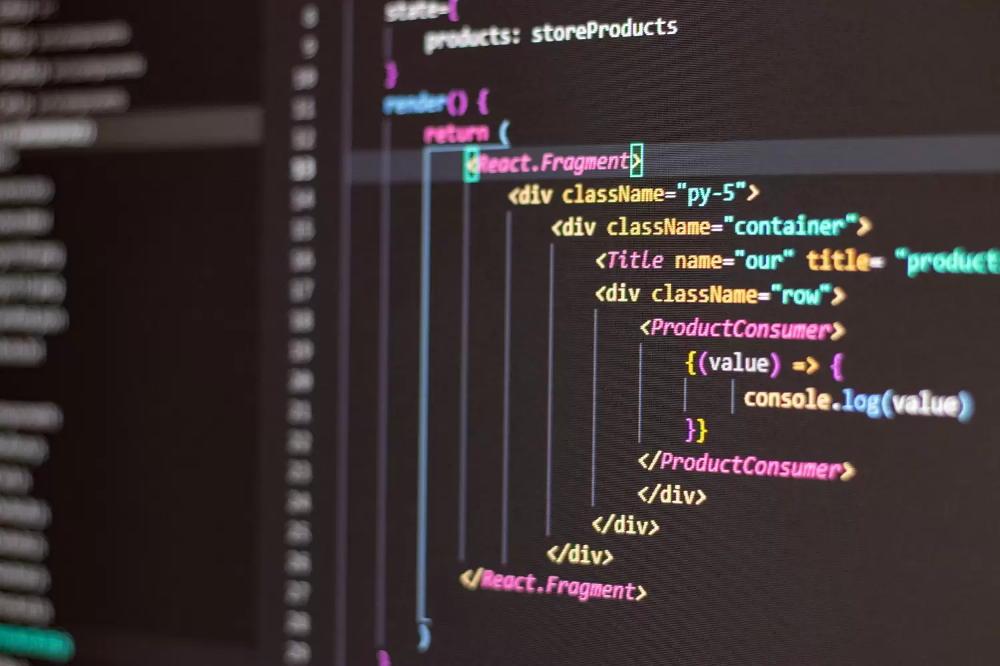

Elaborazione e Programmazione:
Gli sviluppatori scrivono codice in linguaggi di programmazione es: (Python, Java)
- Python:
È un linguaggio di programmazione ad alto livello, molto leggibile e versatile. 
È particolarmente apprezzato per lo sviluppo di applicazioni web, l'analisi dei
dati, l'intelligenza artificiale, l'apprendimento automatico, e la scienza dei dati.
La sua sintassi semplice lo rende ideale per i principianti, ma la sua potenza lo rende
utile anche per progetti avanzati.
- Java:
È un linguaggio di programmazione orientato agli oggetti che è ampiamente usato per
lo sviluppo di applicazioni web e mobili (in particolare per dispositivi Android), nonché
per sistemi aziendali complessi. Java è noto per la sua portabilità, poiché i programmi
scritti in Java possono essere eseguiti su qualsiasi piattaforma che supporta la
Java Virtual Machine (JVM), senza bisogno di modifiche.
- HTML (HyperText Markup Language)
HTML non è propriamente un linguaggio di programmazione, ma un linguaggio di markup.
Serve per strutturare il contenuto di una pagina web. Con HTML, definisci gli elementi
di una pagina web come titoli, paragrafi, immagini, link, liste, tabelle, e altri tipi di contenuti.
Non è un linguaggio di programmazione nel senso tradizionale, poiché non esegue operazioni
logiche o algoritmi; piuttosto, indica al browser come visualizzare il contenuto.
- CSS (Cascading Style Sheets)
CSS è un linguaggio utilizzato per stilizzare (ovvero definire l'aspetto)
di una pagina web scritta in HTML. Con CSS puoi controllare aspetti come colori,
font, margini, allineamenti e layout della pagina. Anche CSS non è un linguaggio
di programmazione, perché non ha capacità logiche o di calcolo, ma è fondamentale
per rendere visivamente accattivante il contenuto web.
I linguaggi come Python, Java, e C++ sono linguaggi di programmazione veri e propri, in cui puoi scrivere algoritmi complessi che eseguono operazioni logiche, calcoli, manipolano dati e interagiscono con altre applicazioni. Invece, HTML e CSS non contengono logica o algoritmi: servono a strutturare e stilizzare il contenuto di una pagina web.
- Aspetti negativi:
+ Aspetti positivi:

Internet per le attività umane!
Oggi internet è un'infrastruttura capace di supportare una grandissima quantità
di attività: una sterminata di rete globale di computer che comunicano
tra loro mettendo a disposizione degli utenti lo scambio dei datii e svariati servizi!
Grazie a internet, una grande mole di informazioni è stata
"smaterializzata" perdendo la necessità di avere un sopporto fisico, e ha dato vita a
una prima gamma di servizi! Altro servizio internet ormai da
considerare storico è word wide web (www) inventato nel 1989!
(URL, Uniform Resource Locator)
(FTP, Protocolli di Trasferimento File)
(IoT, Internet of Things)
Sostenibilità digitale:
Internet, pur essendo uno strumento potente, ha un impatto ambientale.
Contribuire a una maggiore efficienza energetica dei dispositivi e ridurre
l’impronta carbonica delle nostre attività online è un passo verso un futuro più sostenibile.
Educazione digitale e inclusività:
L'educazione digitale è cruciale per garantire che tutte le persone possano
utilizzare internet in modo sicuro e produttivo. Promuovere l'inclusività digitale
aiuta a colmare il divario tra chi ha e chi non ha accesso a tecnologie moderne.
La cybersecurity:
La cybersecurity è fondamentale per proteggere i nostri dati e la nostra privacy.
Utilizzare password sicure, attivare l'autenticazione a due fattori e stare attenti
alle minacce online sono passi importanti per difendersi.